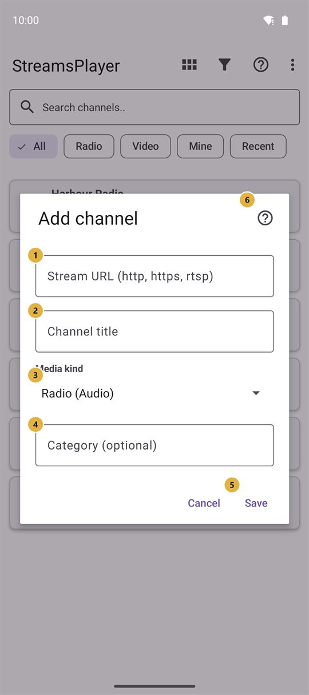
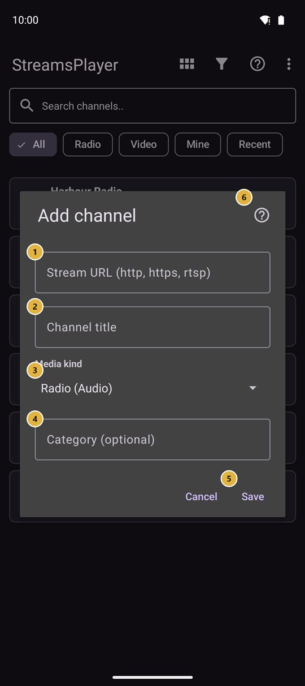

Add channel
What this is for
Put one radio station, video stream or camera into your list by its address. The same form edits a channel you added earlier.


In this order
- Type or paste the address 1. It starts with http, https or rtsp and names a server.
- Give the channel a title 2, or leave it empty to use the address as the title.
- Tell the app what kind of stream it is 3, so it opens in the right player.
- Add a category 4 if you want to find the channel by it later.
- Press Save 5. The channel appears in your list and the form closes.
The elements
1Stream URL (http, https, rtsp)Where the stream is.
An address that starts with http, https or rtsp. Without a server name in it the form says so and stays open. An address with a login and password in it works, but sharing such a channel later asks you to confirm first.
- Undo
- Nothing is saved until you press Save.
2Channel titleHow the channel is named in your list.
Any text. If you leave it empty, the address is used as the title. You can change it later with Edit.
3Media kindRadio, video or RTSP.
Radio (audio) plays in the radio bar and keeps playing in the background. Video (HLS, DASH, MP4) and RTSP open the full screen player. Choose by what the stream carries, not by where it comes from.
4Category (optional)An optional label for your own sorting.
Free text. The category shows up among the categories in Filter & Sort.
5SaveAdds the channel or stores your changes.
Checks the address first. If it is fine, the channel is added and the form closes.
- Undo
- Delete the channel from its actions sheet, or edit it again.
6HelpOpens this page.
The form stays open under the page, with what you typed; Back returns to it.
- Shortcut
- F1